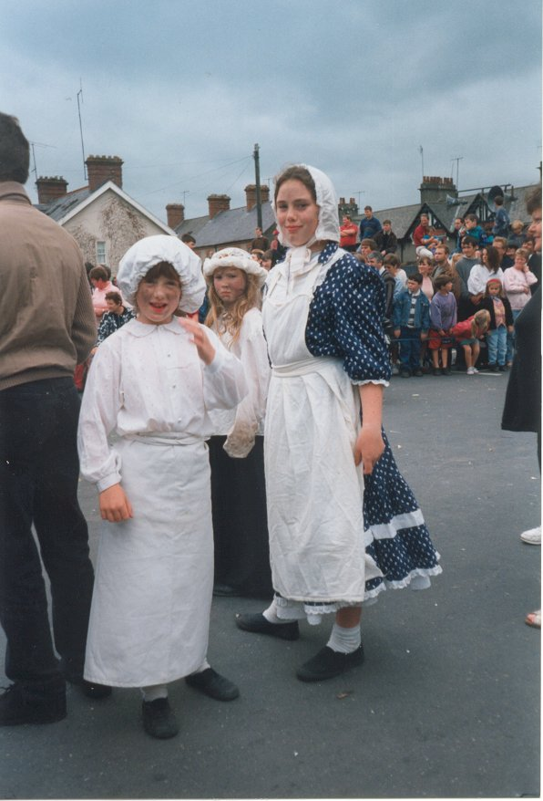

Next Index Previous
Clonmel Craft Fair
The Art Centre runs a craft fair every year, usually in December. Craft workers from all over the country take part in the fair. This has been very successful and well supported by the public.

Cappawhite Street Theatre Group